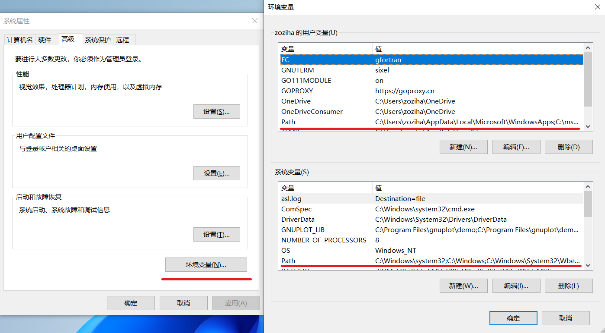

Fortran语言实战


《Fortran语言实战》是一份由Fortran爱好者（Fortran-Fans）社区驱动的Fortran语言编程实战教程。
呼吁：我们需要你们的帮助，欢迎你们为我们贡献教程，促成国内 Fortran 最新教程、信息的繁荣。
| 项目 | 描述 |
|---|---|
| 版本： | 0.0.2 |
| 作者： | Fortran爱好者（Fortran-Fans） |
| 网页： | https://fortran-fans.github.io/Fortran-in-Action/ |
| 版权： | Copyright (c) 2021 Fortran-Fans |
开始
软件依赖
获取代码
git clone https://github.com/fortran-fans/Fortran-in-Action.git
cd Fortran-in-Action
使用mdbook构建文档
mdBook是一个从Markdown文件创建现代在线书籍的实用程序。
你可以通过提供的book.toml文件来构建《Fortran语言实战》。
mdbook build
链接
- Fortran Best Practices
《Fortran最佳实践》是Fortran-Lang官网的mini-book，等待Fortran-Lang官网的国际化进程推进，本教程该部分内容将回馈Fortran-Lang官网。 - rust-lang/mdBook
开源许可证
MIT License
Copyright (c) 2021 Fortran Fans
Permission is hereby granted, free of charge, to any person obtaining a copy of this software and associated documentation files (the "Software"), to deal in the Software without restriction, including without limitation the rights to use, copy, modify, merge, publish, distribute, sublicense, and/or sell copies of the Software, and to permit persons to whom the Software is furnished to do so, subject to the following conditions:
The above copyright notice and this permission notice shall be included in all copies or substantial portions of the Software.
THE SOFTWARE IS PROVIDED "AS IS", WITHOUT WARRANTY OF ANY KIND, EXPRESS OR IMPLIED, INCLUDING BUT NOT LIMITED TO THE WARRANTIES OF MERCHANTABILITY, FITNESS FOR A PARTICULAR PURPOSE AND NONINFRINGEMENT. IN NO EVENT SHALL THE AUTHORS OR COPYRIGHT HOLDERS BE LIABLE FOR ANY CLAIM, DAMAGES OR OTHER LIABILITY, WHETHER IN AN ACTION OF CONTRACT, TORT OR OTHERWISE, ARISING FROM, OUT OF OR IN CONNECTION WITH THE SOFTWARE OR THE USE OR OTHER DEALINGS IN THE SOFTWARE.
关于本书（《Fortran最佳实践》）
作者：Ondřej Čertík、John Pask、Jed Brown、Matthew Emmett、Juan Luis Cano Rodríguez、Neil Carlson、Andrea Vigliotti、Pierre Haessig、Vincent Magnin、Sebastian Ehlert、Jeremie Vandenplas
此书收集了一些现代且规范编写Fortran的方法，将针对常见的话题和任务进行代码风格指导，以及推荐最佳实践方法。总而言之，它会列举和讨论一些规范的解决方案和模式。这本书主要面向已经对Fortran语法和编写有基本了解的编程者。
Fortran风格指导
命名规则
虽然如何命名取决于个人偏好，但是我们在这里给出一份我们喜欢的， 并且在很多科学计算代码（以及Fortran standard library）中流行的风格。欢迎你也使用这一风格。
- 在所有Fortran结构中使用小写字母（
do、subroutine、module……） - 对于数学变量/函数使用简短的数学上的记号（
Ylm、Gamma、gamma、Enl、Rnl……） - 其他的名字全部都用小写字母：尽量让名字为一到两个音节；
如果需要更多音节，则用下划线使其看着清晰（
sortpair、whitechar、meshexp、numstrings、linspace、meshgrid、argsort、spline、spline_interp、spline_interpolate、stoperr、stop_error、meshexp_der）
例如“spline interpolation”可以缩短为spline_interpolation、spline_interpolate、spline_interp、spline，
但不是splineint（“int”可能表示积分、整数等。——太多的歧义，即使在清晰的计算代码上下文中）。
这与 get_argument() 形成对比，这时表达为getarg() 非常整洁明了。
以上是一般性准则。一般来说，选择正确的名字主要取决于，被截断的单词取第一个音节是否足够。显然，通常情况并非如此。 因此，需要考虑下一步“尽量报持名称在2个音节或更少”，因为这确实可以影响表意和简单性。 简单且一致的命名规则在以下情况起到很大的帮助——与别人协作编码，或回顾自己有较长时间没有关注过的历史代码。
缩进
使用一致的缩进使您的代码可读。缩进的数量是一个个人偏好的问题，最常见的选择是两个、三个或四个空格。
与其他语言的比较
另一方面，在其它的、大部分的编程世界，主要重点是以这样或那样的形式定义和使用大量复杂对象， 其中有数以“吨”计的属性和行为，仅在定义它们的代码位置处才能知道（而不是在整个文档中使用相同的符号定义）， 使用更长、更具描述性的命名更有意义。因此，人们看到在更通用的编程语言（如C++和Python）中使用的命名约定 与它们更通用的任务保持完全一致。但是Fortran有不同的使命（数值科学计算）。
浮点数
浮点数的默认表示形式是使用单精度（通常为32位/4字节）。对于大多数程序而言，需要更高的精度。 为此，可以自定义种类（kind）参数。我们推荐使用如下方式定义种类参数
integer, parameter :: dp = selected_real_kind(15)
在很多情景下，通过字面值常量推导得到种类参数也足以满足需求
integer, parameter :: dp = kind(0.0d0)
或将iso_fortran_env内置模块中导入的种类参数重命名，
use, intrinsic :: iso_fortran_env, only : dp => real64
有关种类参数的一些深刻的见解，请看 Doctor Fortran in it takes all KINDs.
我们建议构建一个核心模块来定义种类参数，并在必要时引入它们。 在此，给出此类模块的示例，
!> Numerical storage size parameters for real and integer values
module kind_parameter
implicit none
public
!> Single precision real numbers, 6 digits, range 10⁻³⁷ to 10³⁷-1; 32 bits
integer, parameter :: sp = selected_real_kind(6, 37)
!> Double precision real numbers, 15 digits, range 10⁻³⁰⁷ to 10³⁰⁷-1; 64 bits
integer, parameter :: dp = selected_real_kind(15, 307)
!> Quadruple precision real numbers, 33 digits, range 10⁻⁴⁹³¹ to 10⁴⁹³¹-1; 128 bits
integer, parameter :: qp = selected_real_kind(33, 4931)
!> Char length for integers, range -2⁷ to 2⁷-1; 8 bits
integer, parameter :: i1 = selected_int_kind(2)
!> Short length for integers, range -2¹⁵ to 2¹⁵-1; 16 bits
integer, parameter :: i2 = selected_int_kind(4)
!> Length of default integers, range -2³¹ to 2³¹-1; 32 bits
integer, parameter :: i4 = selected_int_kind(9)
!> Long length for integers, range -2⁶³ to 2⁶³-1; 64 bits
integer, parameter :: i8 = selected_int_kind(18)
end module kind_parameter
声明浮点常量，应始终写出种类参数后缀，
real(dp) :: a, b, c
a = 1.0_dp
b = 3.5_dp
c = 1.34e8_dp
将整数赋值给浮点数（不超过有效数字限制的整数）是安全的，不会丢失精度。
real(dp) :: a
a = 3
为了强制使用浮点除法（与整数除法3/4==0不同），可以通过以下方式将整数转换为浮点数，
real(dp) :: a
a = real(3, dp) / 4 ! 'a' is equal to 0.75_dp
或者简单地用乘以1.0_dp的乘法分隔整数除法。
要在不丢失精度的情况下打印浮点数，使用无限制格式"(g0)"或指数表示法"(es24.16e3)"，会提供17位有效数字的打印输出。
整数除法
Fortran区分浮点运算和整数运算。需要注意的是，整数除法总是使用整数算术。 此外，虽然Fortran使用标准的运算顺序（例如，在没有括号的情况下，乘除法优先级高于加减法）， 但相同优先级的运算是从左到右计算的。 如下，考虑一个奇数做整数除法的例子。
integer :: n
n = 3
print *, n / 2 ! prints 1
print *, n*(n + 1)/2 ! prints 6
print *, n/2*(n + 1) ! prints 4 (left-to-right evaluation order)
n = -3
print *, n / 2 ! prints -1
在实际情况中，请注意你是否真的需要使用整数算术。
如果要改用浮点算术，请确保在使用除法运算符之前强制转换为实数，或通过乘以1.0_dp来分隔整数。
integer :: n
n = 3
print *, real(n, dp) / 2 ! prints 1.5
print *, n * 1.0_dp / 2 ! prints 1.5
n = -3
print *, real(n, dp) / 2 ! prints -1.5
print *, n * 1.0_dp / 2 ! prints -1.5
模块和程序
模块（module）是创建现代Fortran库和应用程序的首选方法。
按照惯例，一个源文件应始终只包含一个模块，而模块名称应与文件路径匹配，以便在较大的项目中可以轻松浏览。
此外还建议在模块名前加上库名，以避免在其他项目中作为依赖项使用时发生名称冲突。
这里给出了一个模块文件的示例，
!> Interface to TOML processing library.
!>
!> ...
module fpm_toml
use fpm_error, only : error_t, fatal_error, file_not_found_error
use fpm_strings, only : string_t
use tomlf, only : toml_table, toml_array, toml_key, toml_stat, get_value, &
& set_value, toml_parse, toml_error, new_table, add_table, add_array, &
& toml_serializer, len
implicit none
private
public :: read_package_file
public :: toml_table, toml_array, toml_key, toml_stat, get_value, set_value
public :: new_table, add_table, add_array, len
public :: toml_error, toml_serializer, toml_parse
contains
!> Process the configuration file to a TOML data structure
subroutine read_package_file(table, manifest, error)
!> TOML data structure
type(toml_table), allocatable, intent(out) :: table
!> Name of the package configuration file
character(len=*), intent(in) :: manifest
!> Error status of the operation
type(error_t), allocatable, intent(out) :: error
! ...
end subroutine read_package_file
end module fpm_toml
本示例模块中有几点需要强调。 首先，每个模块都以注释开始，记录模块的目的和内容。 类似的，每个过程都以一条注释开始，简要描述其目的和虚参的意义。 无论使用何种语言，文档都是创建长期软件的最重要部分之一。
其次，显式地导入use和导出public，通过浏览模块的源代码来检查已经使用的和可用的过程、常量和派生类型。
导入通常应限于模块范围，而不是在每个过程或接口范围中重新导入。
类似的，通过在一行上添加private语句并在public语句中显式列出所有导出符号，可以显式地进行导出。
最后，implicit none语句在整个模块生效，不需要在每个过程中重复使用它。
模块中的变量是静态的（默认save属性）。
强烈建议将模块变量的使用限制为常量表达式，比如只使用常数或枚举对象，或者将它们导出设置为protected而不是public。
在Fortran程序中，子模块（submodule）可以用来打破长依赖链，缩短重新编译的时间。
它们使得我们在不使用预处理器的情况下，提供专用化和经过优化的程序实现。
如下示例是Fortran标准库stdlib中的积分模块， 此处只定义了模块过程的接口，而没有实现。
!> Numerical integration
!>
!> ...
module stdlib_quadrature
use stdlib_kinds, only: sp, dp, qp
implicit none
private
public :: trapz
! ...
!> Integrates sampled values using trapezoidal rule
interface trapz
pure module function trapz_dx_dp(y, dx) result(integral)
real(dp), intent(in) :: y(:)
real(dp), intent(in) :: dx
real(dp) :: integral
end function trapz_dx_dp
module function trapz_x_dp(y, x) result(integral)
real(dp), intent(in) :: y(:)
real(dp), intent(in) :: x(:)
real(dp) :: integral
end function trapz_x_dp
end interface trapz
! ...
end module stdlib_quadrature
具体实现是在单独的子模块中提供的，比如这里给出的梯形积分规则。
!> Actual implementation of the trapezoidal integration rule
!>
!> ...
submodule (stdlib_quadrature) stdlib_quadrature_trapz
use stdlib_error, only: check
implicit none
contains
pure module function trapz_dx_dp(y, dx) result(integral)
real(dp), intent(in) :: y(:)
real(dp), intent(in) :: dx
real(dp) :: integral
integer :: n
n = size(y)
select case (n)
case (0:1)
integral = 0.0_dp
case (2)
integral = 0.5_dp*dx*(y(1) + y(2))
case default
integral = dx*(sum(y(2:n-1)) + 0.5_dp*(y(1) + y(n)))
end select
end function trapz_dx_dp
! ...
end submodule stdlib_quadrature_trapz
请注意，模块过程不必在同一个子模块中实现，可以使用多个子模块来减少大型模块的编译负载。
最后，在构建程序时，推荐尽可能少地在程序主体内留下最终的实现。而通过从模块中复用代码实现，能使你写出可被复用的代码，并专注于将用户输入传递到库函数和库对象的程序单元。
数组
数组是Fortran的核心对象。动态大小数组的创建在可分配数组中讨论. 将数组传递到过程有四种方式
- 假定形状数组（assumed-shape arrays）
- 假定维度数组（assumed-rank arrays）
- 显式形状数组（explicit-shape arrays）
- 假定大小数组（assumed-size arrays）
将数组传递给过程的首选方法是假定形状数组。
subroutine f(r)
real(dp), intent(out) :: r(:)
integer :: n, i
n = size(r)
do i = 1, n
r(i) = 1.0_dp / i**2
end do
end subroutine f
高维数组也可以以类似的方式传递。
subroutine g(A)
real(dp), intent(in) :: A(:, :)
...
end subroutine g
数组通过如下方式被简单地传入，
real(dp) :: r(5)
call f(r)
在这种情况下没有进行数组复制。这样做的好处是数组的形状和大小信息在编译时会自动传递和检查，在运行时可以可选的检查。 类似地，数组片段传递也可以不需要使用临时数组:
real(dp) :: r(10)
call f(r(1:10:2))
call f(r(2:10:2))
这应该是你在子例程中传递数组的默认方式。
避免将数组作为整片传递，因为这会模糊代码的实际意图:
real(dp) :: r(10)
call f(r(:))
如果要更加通用的将数组传递给过程，可以使用Fortran 2018标准中引入的假定维度功能
subroutine h(r)
real(dp), intent(in) :: r(..)
select rank(r)
rank(1)
! ...
rank(2)
! ...
end select
end subroutine h
实际维度可以在运行时使用select rank结构来查询。 这可以很容易地创建更多的泛型函数来处理不同维度的数组。
显式形状数组可以用于从函数返回数据，它们的大部分功能可以由假定形状和假定维数数组完成。 但由于它经常用于与C或遗留Fortran程序的接口，因此在这里简要讨论。
要使用显示形状数组，数组大小必须显式地作为虚参传递，如下例所示，
subroutine f(n, r)
integer, intent(in) :: n
real(dp), intent(out) :: r(n)
integer :: i
do i = 1, n
r(i) = 1.0_dp / i**2
end do
end subroutine f
对于高维数组，必须传递额外的索引。
subroutine g(m, n, A)
integer, intent(in) :: m, n
real(dp), intent(in) :: A(m, n)
...
end subroutine g
可以如下方式调用，
real(dp) :: r(5), s(3, 4)
call f(size(r), r)
call g(size(s, 1), size(s, 2), s)
注意，此处没有检查形状，因此以下是可能产生错误结果的合法代码:
real(dp) :: s(3, 4)
call g(size(s), 1, s) ! s(12, 1) in g
call g(size(s, 2), size(s, 1), s) ! s(4, 3) in g
在这种情况下，保留了内存布局，但数组的形状改变了。 此外，显式形状数组需要连续的内存，并且在通过非连续数组切片访问时,需要创建临时数组。
使用函数返回显式形状数组，
function f(n) result(r)
integer, intent(in) :: n
real(dp) :: r(n)
integer :: i
do i = 1, n
r(i) = 1.0_dp / i**2
end do
end function f
最后，还有假定大小的数组，它提供最少的编译时和运行时检查，经常可以在遗留代码中找到。
它应该避免和假定形状或假定维度数组一起使用。
一个假定大小数组的虚参被星号标识为最后一个维度，这将禁止许多数组内置函数的使用，如size或shape。
要检查假定形状数组的大小和形状是否正确，size和shape内部函数可用于查询这些属性，
if (size(r) /= 4) error stop "Incorrect size of 'r'"
if (any(shape(r) /= [2, 2])) error stop "Incorrect shape of 'r'"
注意，size返回所有维度的总大小,要获得特定维度的形状，请将第二个参数dim添加到函数中。
可以使用数组构造器初始化数组
integer :: r(5)
r = [1, 2, 3, 4, 5]
隐式do循环也可以在数组构造器中使用，
integer :: i
real(dp) :: r(5)
r = [(real(i**2, dp), i = 1, size(r))]
数组构造器要求数组的类型是相同的,可以在开头加上类型的名称来规定
real(8)::a(4)
complex(8)::b(4)
!a=[1.2d0,2,3,4]!错误
a=[real(8)::1.2d0,2,3,4]!正确
b=[complex(8)::1,2,(1.d0,2.d0),1.1d0]!正确
要使数组不以索引1开始，请执行以下操作：
subroutine print_eigenvalues(kappa_min, lam)
integer, intent(in) :: kappa_min
real(dp), intent(in) :: lam(kappa_min:)
integer :: kappa
do kappa = kappa_min, ubound(lam, 1)
print *, kappa, lam(kappa)
end do
end subroutine print_eigenvalues
高维数组
多维数组按列优先存储，这意味着最左边（最里面）的索引是连续的。
从实际使用角度来看，这意味着数组切片V(:,1)是连续的，
而切片V(1,:)中的元素之间的间隔是数组列的大小。
当将数组片段传递给希望处理连续数据的过程时，这一点非常重要。
根据应用程序的不同，考虑内存的位置是很重要的， 通常在多维度上执行操作时，顺序访问总是应该以大小为1的长度增加。
在下面的例子中，计算两组点之间距离的倒数。
记这些点是连续存储在数组xyz1/xyz2 中，
而最内部的循环是矩阵a的最左边的索引增加。
subroutine coulomb_matrix(xyz1, xyz2, a)
real(dp), intent(in) :: xyz1(:, :)
real(dp), intent(in) :: xyz2(:, :)
real(dp), intent(out) :: a(:, :)
integer :: i, j
do i = 1, size(a, 2)
do j = 1, size(a, 1)
a(j, i) = 1.0_dp/norm2(xyz1(:, j) - xyz2(:, i))
end do
end do
end subroutine coulomb_matrix
另一个例子是三维数组的第三维缩并，
do i = 1, size(amat, 3)
do j = 1, size(amat, 2)
do k = 1, size(amat, 1)
cmat(k, j) = cmat(k, j) + amat(k, j, i) * bvec(i)
end do
end do
end do
可以在数组绑定中重映射，以使用连续数组切片。 允许将高维数组用作低维数组，而不需要重新格式化数组， 这样避免了有可能创建临时数组。
例如，可以使用矩阵向量操作来缩并三维数组的第三维:
subroutine matmul312(amat, bvec, cmat)
real(dp), contiguous, intent(in), target :: amat(:, :, :)
real(dp), intent(in) :: bvec(:)
real(dp), contiguous, intent(out), target :: cmat(:, :)
real(dp), pointer :: aptr(:, :)
real(dp), pointer :: cptr(:)
aptr(1:size(amat, 1)*size(amat, 2), 1:size(amat, 3)) => amat
cptr(1:size(cmat)) => cmat
cptr = matmul(aptr, bvec)
end subroutine matmul312
逐元操作
当使用子例程和函数时，有三种方法可以在数组上执行逐元操作:
elemental过程；- 显式形状 数组；
- 实现向量的操作，并对不同的维度编写简单的包装器（内部使用
reshape实现）。
在第一种方法中，使用elemental关键字创建这样的函数:
real(dp) elemental function nroot(n, x) result(y)
integer, intent(in) :: n
real(dp), intent(in) :: x
y = x**(1._dp / n)
end function nroot
所有参数（in和out）必须是标量。例如，您可以对任何（兼容的）形状的数组使用此函数，
print *, nroot(2, 9._dp)
print *, nroot(2, [1._dp, 4._dp, 9._dp, 10._dp])
print *, nroot(2, reshape([1._dp, 4._dp, 9._dp, 10._dp], [2, 2]))
print *, nroot([2, 3, 4, 5], [1._dp, 4._dp, 9._dp, 10._dp])
print *, nroot([2, 3, 4, 5], 4._dp)
输出如下，
3.0000000000000000
1.0000000000000000 2.0000000000000000 3.0000000000000000 3.1622776601683795
1.0000000000000000 2.0000000000000000 3.0000000000000000 3.1622776601683795
1.0000000000000000 1.5874010519681994 1.7320508075688772 1.5848931924611136
2.0000000000000000 1.5874010519681994 1.4142135623730951 1.3195079107728942
如上，通常情况下，n是一个参数，而x是一个任意形状的数组。
但是如您所见，只要最终的操作是有意义的（即如果一个参数是数组，
那么其他的参数必须是相同的形状的数组或标量），Fortran并不在乎其形式。
如果不满足，那么将得到一个编译错误。
elemental关键字通常意味着pure关键字，因此过程必须是纯的，没有副作用。
您可以添加 impure 关键字来取消这一限制，
impure elemental subroutine write_all(a)
inetger, intent(in) :: a
write(*,"(g0)") a
end subroutine write_all
可分配数组
allocatable属性为内存处理提供了安全的方式，
与具有pointer属性的变量相比，其内存是自动管理的，
一旦变量超出作用域，内存就会自动释放。
使用allocatable变量可以消除在应用程序中产生内存泄漏的可能性。
可分配数组可以在子例程中用于创建临时或工作数组， ，而自动数组可能会由于所需空间太大不能放在栈中。
real(dp), allocatable :: temp(:)
allocate(temp(10))
分配状态可以使用allocated来检查，以避免未初始化的访问。
subroutine show_arr(arr)
integer, allocatable, intent(in) :: arr(:)
if (allocated(arr)) then
print *, arr
end if
end subroutine show_arr
要在一个过程中传递使用可分配变量，虚参必须带有allocatable属性。
如果与intent(out)结合使用，那么数组会在进入这个过程之前释放。
subroutine foo(lam)
real(dp), allocatable, intent(out) :: lam(:)
allocate(lam(5))
end subroutine foo
分配之后的数组可以像普通数组一样使用，
real(dp), allocatable :: lam(:)
call foo(lam)
已经分配的数组在没有事先释放的情况下不能再次进行分配。 同样，只能对已分配的数组进行释放。 重新分配数组使用如下操作，
if (allocated(lam)) deallocate(lam)
allocate(lam(10))
将已分配的数组传递给过程虚参不需要allocatable属性。
subroutine show_arr(arr)
integer, intent(in) :: arr(:)
print *, arr
end subroutine show_arr
subroutine proc
integer :: i
integer, allocatable :: arr(:)
allocate(arr(5))
do i = 1, size(arr)
arr(i) = 2*i + 1
end do
call show_arr(arr)
end subroutine proc
在程序中传递未分配的数组将导致无效的内存访问。
可分配数组可以传递给带optional属性的虚参----如果它们未被分配，
则此参数实际上将不存在。
allocatable属性不仅限于数组，还可以与标量关联，
它可以与带optional属性的虚参结合使用。
使用move_alloc内部子程序，可以在带有allocatable属性的数组之间移动分配属性。
subroutine resize(var, n)
real(wp), allocatable, intent(inout) :: var(:)
integer, intent(in), optional :: n
integer :: this_size, new_size
integer, parameter :: inital_size = 16
if (allocated(var)) then
this_size = size(var, 1)
call move_alloc(var, tmp)
else
this_size = initial_size
end if
if (present(n)) then
new_size = n
else
new_size = this_size + this_size/2 + 1
end if
allocate(var(new_size))
if (allocated(tmp)) then
this_size = min(size(tmp, 1), size(var, 1))
var(:this_size) = tmp(:this_size)
end if
end subroutine resize
最后，分配不会不初始化数组的值。 未初始化数组的内容很可能只是之前在相应地址处的任何内容的字节。 分配时可以使用source进行初始化，
real(dp), allocatable :: arr(:)
allocate(arr(10), source=0.0_dp)
source关键字支持标量，数组变量和常量。
文件io
在Fortran中，文件由unit单元标识符管理。
与文件系统的交互主要通过open和inquire内置过程进行。
通常，工作流是打开一个文件到一个单元标识符，读和（或）写，然后再关闭它。
integer :: io
open(newunit=io, file="log.txt")
! ...
close(io)
默认情况下，如果文件还不存在，并且为同时具有读和写操作的文件， 那么将会创建该文件。 写入现有文件将从第一个记录（即第一行）开始，因此默认情况下会覆盖文件。
要对文件的进行只读访问，必须指定status和action，
integer :: io
open(newunit=io, file="log.txt", status="old", action="read")
read(io, *) a, b
close(io)
如果文件不存在，则会发生运行时错误。
要在打开文件之前检查文件是否存在，可以使用 inquire函数。
logical :: exists
inquire(file="log.txt", exist=exists)
if (exists) then
! ...
end if
或者，使用open过程可以返回一个可选的iostat和iomsg:
integer :: io, stat
character(len=512) :: msg
open(newunit=io, file="log.txt", status="old", action="read", &
iostat=stat, iomsg=msg)
if (stat /= 0) then
print *, trim(msg)
end if
注意，iomsg需要一个固定长度的字符变量，它应当有足够的长度来保存错误信息。
类似地，使用status和action关键字创建一个写入文件。 如下创建一个新的写入文件，
integer :: io
open(newunit=io, file="log.txt", status="new", action="write")
write(io, *) a, b
close(io)
status="replace"可以用于覆盖现有文件。
强烈建议在使用status之前，首先检查文件是否存在。
要追加到输出文件，可以显式指定position关键字，
integer :: io
open(newunit=io, file="log.txt", position="append", &
& status="old", action="write")
write(io, *) size(v)
write(io, *) v(:)
close(io)
要重置文件中的位置，可以使用内置过程rewind和backspace。
rewind将重置为第一个记录（行），而backspace将返回到前一个记录（行）。
最后，要删除文件，文件必须要打开，并可以在关闭后删除。
logical :: exists
integer :: io, stat
inquire(file="log.txt", exist=exists)
if (exists) then
open(file="log.txt", newunit=io, iostat=stat)
if (stat == 0) close(io, status="delete", iostat=stat)
end if
一个有用的IO功能是暂存文件，它可以用status="scratch"打开。
关闭单元标识符后，它将自动删除。
回调函数
回调函数是作为参数传递给另一个函数的函数。 创建此类回调函数的首选方法是提供抽象接口（abstract interface）声明回调函数的特征。 这样可以对传递的回调函数进行编译时检查。
module integrals
use types, only: dp
implicit none
private
public :: simpson, integrable_function
abstract interface
function integrable_function(x) result(func)
import :: dp
real(dp), intent(in) :: x
real(dp) :: func
end function integrable_function
end interface
contains
function simpson(f, a, b) result(s)
real(dp), intent(in) :: a, b
procedure(integrable_function) :: f
real(dp) :: s
s = (b-a) / 6 * (f(a) + 4*f((a+b)/2) + f(b))
end function simpson
end module integrals
然后，通过导入模块，该函数将作为回调函数使用，如下例所示，
module demo_functions
use types, only: dp
implicit none
private
public :: test_integral
contains
subroutine test_integral(a, k)
real(dp), intent(in) :: a, k
print *, simpson(f, 0._dp, pi)
print *, simpson(f, 0._dp, 2*pi)
contains
function f(x) result(y)
real(dp), intent(in) :: x
real(dp) :: y
y = a*sin(k*x)
end function f
end subroutine test_integral
end module demo_functions
如果导出抽象接口,可以创建具有正确特征的过程指针， 还可以进一步扩展回调函数，如下所示，
module demo_integrals
use types, only: dp
use integrals, only: simpson, integrable_function
implicit none
private
public :: simpson2, integrable_function
contains
function simpson2(f, a, b) result(s)
real(dp), intent(in) :: a, b
procedure(integrable_function) :: f
real(dp) :: s
real(dp) :: mid
mid = (a + b)/2
s = simpson(f, a, mid) + simpson(f, mid, b)
end function simpson2
end module demo_integrals
回调函数中的类型转换
在回调函数的使用中，经常需要传递一些参数给被调用函数，例如f(x)=a*sin(k*x)，这时就需要类型转换。
类型转换基本上有五种不同的方法，每种方法都有自己的优缺点。
方法I、II和V可用于C和Fortran。方法III和方法IV只能在Fortran中使用。方法VI已过时，不应使用。
工作数组
传递一个“工作数组”，该数组包含调用方所需的所有内容，并由被调用的例程解压缩。这是一种古老的方式--例如，LAPACK正是使用这种方法。
积分器:
module integrals
use types, only: dp
implicit none
private
public simpson
contains
real(dp) function simpson(f, a, b, data) result(s)
real(dp), intent(in) :: a, b
interface
real(dp) function func(x, data)
use types, only: dp
implicit none
real(dp), intent(in) :: x
real(dp), intent(inout) :: data(:)
end function
end interface
procedure(func) :: f
real(dp), intent(inout) :: data(:)
s = (b-a) / 6 * (f(a, data) + 4*f((a+b)/2, data) + f(b, data))
end function
end module
用法:
module test
use types, only: dp
use integrals, only: simpson
implicit none
private
public foo
contains
real(dp) function f(x, data) result(y)
real(dp), intent(in) :: x
real(dp), intent(inout) :: data(:)
real(dp) :: a, k
a = data(1)
k = data(2)
y = a*sin(k*x)
end function
subroutine foo(a, k)
real(dp) :: a, k
real(dp) :: data(2)
data(1) = a
data(2) = k
print *, simpson(f, 0._dp, pi, data)
print *, simpson(f, 0._dp, 2*pi, data)
end subroutine
end module
通用结构
定义一个通用的结构，包含目前实际的需求（甚至在未来的需求）。 这个通用结构类型可以根据未来的需求或设想而改变，但不太可能需要比如从传递实数更改为文本编辑器的实例化。
积分器:
module integrals
use types, only: dp
implicit none
private
public simpson, context
type context
! This would be adjusted according to the problem to be solved.
! For example:
real(dp) :: a, b, c, d
integer :: i, j, k, l
real(dp), pointer :: x(:), y(:)
integer, pointer :: z(:)
end type
contains
real(dp) function simpson(f, a, b, data) result(s)
real(dp), intent(in) :: a, b
interface
real(dp) function func(x, data)
use types, only: dp
implicit none
real(dp), intent(in) :: x
type(context), intent(inout) :: data
end function
end interface
procedure(func) :: f
type(context), intent(inout) :: data
s = (b-a) / 6 * (f(a, data) + 4*f((a+b)/2, data) + f(b, data))
end function
end module
用法:
module test
use types, only: dp
use integrals, only: simpson, context
implicit none
private
public foo
contains
real(dp) function f(x, data) result(y)
real(dp), intent(in) :: x
type(context), intent(inout) :: data
real(dp) :: a, k
a = data%a
k = data%b
y = a*sin(k*x)
end function
subroutine foo(a, k)
real(dp) :: a, k
type(context) :: data
data%a = a
data%b = k
print *, simpson(f, 0._dp, pi, data)
print *, simpson(f, 0._dp, 2*pi, data)
end subroutine
end module
真正需要的灵活性只有这么多。例如，可以为此定义两种结构类型，一种用于情况A，另一种用于情况B。然后，每一个都将具有足够的通用性，并包含所有需要的部分和正确的标志。
注意：它不必是“一个包罗万象的抽象类”或空类。在“全部”和“无”之间有自然和可行的选择。
私有的模块变量
通过传入模块变量来完全隐藏变量参数。
积分器:
module integrals
use types, only: dp
implicit none
private
public simpson
contains
real(dp) function simpson(f, a, b) result(s)
real(dp), intent(in) :: a, b
interface
real(dp) function func(x)
use types, only: dp
implicit none
real(dp), intent(in) :: x
end function
end interface
procedure(func) :: f
s = (b-a) / 6 * (f(a) + 4*f((a+b)/2) + f(b))
end function
end module
用法:
module test
use types, only: dp
use integrals, only: simpson
implicit none
private
public foo
real(dp) :: global_a, global_k
contains
real(dp) function f(x) result(y)
real(dp), intent(in) :: x
y = global_a*sin(global_k*x)
end function
subroutine foo(a, k)
real(dp) :: a, k
global_a = a
global_k = k
print *, simpson(f, 0._dp, pi)
print *, simpson(f, 0._dp, 2*pi)
end subroutine
end module
但是，如果可能的话，最好避免这样的全局变量--即使实际上只是半全局变量(semi-global)。虽然有时这可能是最简单最干净的方式，然而，只要沿着II或IV的路线稍加思考，通常会有一个更好、更安全、更明确的方案。
嵌套函数
积分器:
module integrals
use types, only: dp
implicit none
private
public simpson
contains
real(dp) function simpson(f, a, b) result(s)
real(dp), intent(in) :: a, b
interface
real(dp) function func(x)
use types, only: dp
implicit none
real(dp), intent(in) :: x
end function
end interface
procedure(func) :: f
s = (b-a) / 6 * (f(a) + 4*f((a+b)/2) + f(b))
end function
end module
用法:
subroutine foo(a, k)
use integrals, only: simpson
real(dp) :: a, k
print *, simpson(f, 0._dp, pi)
print *, simpson(f, 0._dp, 2*pi)
contains
real(dp) function f(x) result(y)
real(dp), intent(in) :: x
y = a*sin(k*x)
end function f
end subroutine foo
使用type(c_ptr)指针
在C语言中，可以使用void*指针。在Fortran中，可以使用type(c_ptr)来达到完全相同的目的。
积分器:
module integrals
use types, only: dp
use iso_c_binding, only: c_ptr
implicit none
private
public simpson
contains
real(dp) function simpson(f, a, b, data) result(s)
real(dp), intent(in) :: a, b
interface
real(dp) function func(x, data)
use types, only: dp
implicit none
real(dp), intent(in) :: x
type(c_ptr), intent(in) :: data
end function
end interface
procedure(func) :: f
type(c_ptr), intent(in) :: data
s = (b-a) / 6 * (f(a, data) + 4*f((a+b)/2, data) + f(b, data))
end function
end module
用法:
module test
use types, only: dp
use integrals, only: simpson
use iso_c_binding, only: c_ptr, c_loc, c_f_pointer
implicit none
private
public foo
type f_data
! Only contains data that we need for our particular callback.
real(dp) :: a, k
end type
contains
real(dp) function f(x, data) result(y)
real(dp), intent(in) :: x
type(c_ptr), intent(in) :: data
type(f_data), pointer :: d
call c_f_pointer(data, d)
y = d%a * sin(d%k * x)
end function
subroutine foo(a, k)
real(dp) :: a, k
type(f_data), target :: data
data%a = a
data%k = k
print *, simpson(f, 0._dp, pi, c_loc(data))
print *, simpson(f, 0._dp, 2*pi, c_loc(data))
end subroutine
end module
与以往一样，Fortran允许您在真正需要的情况下使用这种重新转换的优点， 但同时也有一些缺点，即编译和运行时检查可能无法捕获错误。因此，这将不可避免地会有更多的漏洞百出、容易出现bug的代码，所以需要考虑平衡成本和收益。
通常，在科学计算中，主要目的是表示和求解精确的数学公式（而不是创建一个包含无数按钮、下拉框和其他界面元素的GUI)，所以，最简单、最不容易出错、最快的选择是使用前面的方法之一。
transfer内置函数
在Fortran 2003之前，做类型转换的唯一方法是使用transfer内置函数。
它在功能上与方法V等效，但更冗长，更容易出错。它现在已经过时了，应该使用方法V来代替。
Examples:
http://jblevins.org/log/transfer
http://jblevins.org/research/generic-list.pdf
http://www.macresearch.org/advanced_fortran_90_callbacks_with_the_transfer_function
面向对象的策略
如下模块
module integrals
use types, only: dp
implicit none
private
public :: integrand, simpson
! User extends this type
type, abstract :: integrand
contains
procedure(func), deferred :: eval
end type
abstract interface
function func(this, x) result(fx)
import :: integrand, dp
class(integrand) :: this
real(dp), intent(in) :: x
real(dp) :: fx
end function
end interface
contains
real(dp) function simpson(f, a, b) result(s)
class(integrand) :: f
real(dp), intent(in) :: a, b
s = ((b-a)/6) * (f%eval(a) + 4*f%eval((a+b)/2) + f%eval(b))
end function
end module
抽象类型准确地规定了集成例程需要什么，即函数求值的方法，但不会对用户强加任何其他东西。 用户扩展此类型，提供 eval 类型绑定过程的具体实现，并添加必要的上下文数据作为扩展类型的成员。
用法:
module example_usage
use types, only: dp
use integrals, only: integrand, simpson
implicit none
private
public :: foo
type, extends(integrand) :: my_integrand
real(dp) :: a, k
contains
procedure :: eval => f
end type
contains
function f(this, x) result(fx)
class(my_integrand) :: this
real(dp), intent(in) :: x
real(dp) :: fx
fx = this%a*sin(this%k*x)
end function
subroutine foo(a, k)
real(dp) :: a, k
type(my_integrand) :: my_f
my_f%a = a
my_f%k = k
print *, simpson(my_f, 0.0_dp, 1.0_dp)
print *, simpson(my_f, 0.0_dp, 2.0_dp)
end subroutine
end module
关于 C的void *，Fortran 的两种实现方式 type(c_ptr)和transfer的完整示例
这里有三个等价代码：在C中使用void*，在Fortran中使用type(c_ptr)和transfer()：
| Language | Method | Link |
|---|---|---|
| C | void * | https://gist.github.com/1665641 |
| Fortran | type(c_ptr) | https://gist.github.com/1665626 |
| Fortran | transfer() | https://gist.github.com/1665630 |
C代码使用标准的C方法来编写接受回调和上下文的可扩展库。两个Fortran代码展示了如何做同样的事情。 type(c_ptr)方法与C版本等效，这是应该使用的方法。
这里的transfer()方法只是为了完善对比（在Fortran2003之前，这是唯一的方法），它有点麻烦，因为用户需要为每个类型创建辅助转换函数。因此，推荐使用type(c_ptr)方法代替它。
Fortran 程序中的陷阱
翻译原文网址 https://www.cs.rpi.edu/~szymansk/OOF90/bugs.html
多年来，我们在Fortran 90中犯了很多有趣的错误，想和大家分享。欢迎您的贡献和经验，以便能够分享您的痛苦。 这些“陷阱”令人讨厌，因为它们在某些机器上不会失败，而在其他机器上可能会失败（考虑到编译器和机器平台的各种组合）。
可选参数的陷阱
在本例中，用一个可选参数来确定是否打印标题。
subroutine print_char(this,header)
character(len=*), intent (in) :: this
logical, optional, intent (in) :: header
! THIS IS THE WRONG WAY
if (present(header) .and. header) then
print *, 'This is the header '
endif
print *, this
end subroutine print_char
subroutine print_char2(this,header)
character(len=*), intent (in) :: this
logical, optional, intent (in) :: header
! THIS IS THE RIGHT WAY
if (present(header)) then
if (header) print *, 'This is the header '
endif
print *, this
end subroutine print_char2
解释
第一种方法不安全，因为编译器可以在计算present函数之前计算header参数。如果header参数实际上不存在，可能会发生越界内存引用(Segmentation fault - invalid memory reference.)。
Intent(out)的陷阱
program intent_gotcha
type mytype
integer :: x
real,allocatable:: y
end type mytype
type (mytype) :: a
a%x = 1 ; a%y = 2.
call assign(a)
! a%y COULD BE UNDEFINED HERE
print *, a%x , a%y
contains
subroutine assign(this)
type (mytype), intent (out) :: this
! THIS IS THE WRONG WAY
this%x = 2
end subroutine assign
subroutine assign2(this)
type (mytype), intent (out) :: this
! THIS IS THE RIGHT WAY
this%x = 2 ; this%y = 2.
end subroutine assign2
subroutine assign3(this)
type (mytype), intent (inout) :: this
! THIS IS THE RIGHT WAY
this%x = 2
end subroutine assign3
end program intent_gotcha
解释
问题是，当intent(out)与派生类型一起使用时，过程中未分配的任何成员都可能在退出时变得未定义。例如，即使在进入该例程时定义了%y，但在退出时它可能会变得未定义，因为它从未在例程中分配过。教训是，当使用intent(out)时，派生类型的所有成员都应该在一个过程中指定。Intent(out)的行为类似于函数中的结果变量：必须分配所有成员。
或者，使用intent(inout)。
初始化局部变量的陷阱
real function kinetic_energy(v)
real, dimension(:), intent(in) :: v
integer i
! THIS IS THE WRONG WAY
real :: ke = 0.0
do i = 1, size(v)
ke = ke + v(i)**2
enddo
kinetic_energy = .5*ke
end function kinetic_energy
real function kinetic_energy2(v)
real, dimension(:), intent(in) :: v
integer i
! THIS IS THE RIGHT WAY
real :: ke
ke = 0.
do i = 1, size(v)
ke = ke + v(i)**2
enddo
kinetic_energy2 = .5*ke
end function kinetic_energy2
解释
声明时初始化的局部变量具有隐式save属性。ke仅在第一次调用函数时初始化。在后续调用中，保留旧的ke值。
为了避免混淆，最好将save属性显式地添加到这些本地初始化的变量中，即使看起来是多余的。
调用Fortran 90 风格的子程序
program main
real, dimension(5) :: x
x = 0.
! THIS IS WRONG
call incb(x)
print *, x
end program main
subroutine incb(a)
! this is a fortran90 style subroutine
real, dimension(:) :: a
a = a + 1.
end subroutine incb
解释
子例程incb使用Fortran 90中的假定形状数组(包含维度(:))。此类例程必须位于模块module中，或者在使用它们的任何地方都有一个显式接口。
调用此类过程的一个正确方法是使用显式接口，如下所示：
program main
real, dimension(5) :: x
! THIS IS THE RIGHT WAY
interface
subroutine incb(a)
real, dimension(:) :: a
end subroutine incb
end interface
x = 0.
call incb(x)
print *, x
end program main
subroutine incb(a)
! this is a fortran90 style subroutine
real, dimension(:) :: a
a = a + 1.
end subroutine incb
如果例程位于模块中，则会自动生成接口，无需显式编写。
! THIS IS ANOTHER RIGHT WAY
module inc
contains
subroutine incb(a)
! this is a fortran90 style subroutine
real, dimension(:) :: a
a = a + 1.
end subroutine incb
end module inc
program main
use inc
real, dimension(5) :: x
x = 0.
call incb(x)
print *, x
end program main
如果使用接口，接口必须与实际的函数匹配。
Fortran77 风格的接口
program main
real, dimension(5) :: x
! interface to Fortran 77 style routine
interface
subroutine inca(a,n)
integer :: n
! THIS IS THE WRONG WAY
real, dimension(:) :: a
! THIS IS THE RIGHT WAY
real, dimension(n) :: a
end subroutine inca
end interface
x = 0.
call inca(x,5)
print *, x
end program main
subroutine inca(a,n)
! this is a fortran77 style subroutine
dimension a(n)
do 10 j = 1, n
a(j) = a(j) + 1.
10 continue
return
end
解释
接口声明必须始终与实际的子例程声明相匹配。在本例中，接口语句引用Fortran 90样式的假定形状数组。实际的子例程引用Fortran 77显式形状数组。这里的教训是：Fortran 77风格例程的接口必须只使用Fortran 77风格的构造。 在本例中，允许完全省略接口，因为没有接口的例程在默认情况下被视为Fortran77样式的例程。但是，如果忽略了接口，编译器将不再检查调用过程的参数是否与接口中列出的参数一致。
函数重载
Fortran 90允许对不同的函数使用相同的函数名，只要函数的参数不同。人们会认为下面的函数first_sub和second_sub是不同的，因为在first_sub中，第一个参数是实数，第二个参数是整数，而在second_sub中，参数是相反的。实际上并不是这样。
interface first_or_second
module procedure first_sub, second_sub
end interface
subroutine first_sub(a,i)
real :: a
integer :: i
...
end subroutine first_sub
!
subroutine second_sub(i,a)
integer :: i
real :: a
...
end subroutine second_sub
解释
原因是Fortran 90允许按名称（关键字）参数调用过程。
real :: b
integer :: n
call first_or_second(i=n,a=b)
该方法将不起作用，因为当按关键字调用时，first_sub和second_sub无法区分，
call first_sub(i=n,a=b)
call second_sub(i=n,a=b)
因此不能定义通用函数。通用函数必须能够按类型和名称区分其参数。 解决方案是不要在两个过程中使用相同的虚参名称。例如，以下方法可行：
subroutine second_sub(i,aa)
integer :: i
real :: aa
...
end subroutine second_sub
可分配数组自动分配
Fortran 2003之后的标准允许对可分配数组自动分配，这个特性可能为开发者带来方便，同时也带来一些隐藏的bug
program alloc
implicit none
integer,allocatable::a(:)
integer::b(4)
a=[1,2]
write(*,*)size(a)
a=[a,3]
write(*,*)size(a)
a=b+1
write(*,*)size(a)
end program alloc
解释
a=[1,2]! 1,此时a数组自动分配，大小为2
a=[a,3]! 2,此时数组自动追加元素，大小为3
a=b+1 ! 3,此时由于b+1得到一个大小为4的数组，a会被重新分配，所以大小为4
在计算中，第3种情况可能带来一些无法错误，可以利用如下的办法解决
a(:)=b+1
此时，编译器会检查数组两边大小是否匹配，然后抛出错误。
在Windows系统下进行Fortran编程
该篇章将着重讲述我们在Windows下编程进行Fortran编程。
GFortran篇
在Windows系统下，我们推荐MSYS2-GFortran，原因是MSYS2基于pacman包管理滚动更新，拥有丰富的开发工具集且使用简单，这往往适用于极客、爱好者。
如果你对编程环境的稳定性需求很高，你可以前往equation.com或者winlibs.com（一些国外网站可能无法访问）下载固定版本号的Mingw-w64-GCC编程套件，
或者使用Intel OneAPI套件。
如果你对原生编程工具集有需求，或者Mingw环境出现了BUG，你可以试着安装WSL2。
Intel OneAPI篇
Intel出品的OneAPI套件，性能强劲，且已经被免费提供了。适合对高性能、稳定性有需求的用户。
环境路径
在Windows下进行编程，往往离不开环境路径，它使得可执行程序可以被索引。
通过在键盘上按下Win键，再输入path可以快速启动“编辑系统环境变量”。

用户变量和系统变量
一台计算机可以创建多个用户账户。
用户变量框内设置的环境变量只适用于计算机的当前账号；系统变量框内设置的环境变量将适用于该计算机的所有用户账号。
三类环境变量
需要注意的是环境变量根据用途，主要可以分为三类：
Path：存储可执行程序的路径；OS：值一般为Windows_NT，用以程序判断当前系统类型；- 其他环境变量。
使用GFortran
微软公司开发的Windows系统具有强大的图形用户界面🎨，是我们常用的操作系统。
GCC Fortran编译器，对Fortran新标准的支持非常及时，是一款免费🍻的开源软件。
🔰 提示：以下教程，同样适用于在Visual Studio Code中使用Intel OneAPI（需要做出适应性改变：gfortran改为ifort）。安装OneAPI请参考安装OneAPI的独立组件（第二种方案）。
使用MSYS2-GFortran
可以将MSYS2简单地理解为一个包管理器，集成了pacman和Mingw-w64。
安装MSYS2软件
前往MSYS2项目官方网站📡，点击图示箭头指向的链接，下载MSYS2软件，阅读网页提供的安装教程进行安装和使用📜。

当我们在使用MSYS2软件的过程中遇到困难或者软件漏洞时，我们可以向MSYS2项目的GitHub仓库的议题🎯寻求帮助。
安装MSYS2-GFortran软件
首先，我们熟悉一下MSYS2软件的命令行基础操作🕹，这在MSYS2项目官方提供的文档中能找到：
pacman -Syu # 升级msys2内部组件和仓库信息
pacman -Ss <package_name> # 搜索软件
pacman -S <package_name> # 安装软件
pacman -Qs <package_name> # 查询本地安装的特定软件
pacman -Rs <package_name> # 卸载软件
pacman -R --help # 查询命令的帮助文档
...
请务必灵活🏓使用MSYS2软件，该软件在运行前有一些个性化的配置文件可以设置，当然保持默认也是不错的。
现在我们知道，可以通过下面的方式在MSYS2软件中安装GFortran：
pacman -Ss fortran # 查询名字中含“Fortran”字符的包
pacman -S ucrt64/mingw-w64-ucrt-x86_64-gcc-fortran # 安装ucrt64版本的gfortran
当然，我们还可以使用MSYS2软件，下载GNU Make/CMake/openBLAS/Python/Golang/...等丰富的软件或者链接库。GCC WIKI为我们提供了一些GFortran的信息文档，其中就有GFortran最新的帮助文档。
gfortran <name>.f90 # 编译fortran源代码文件
gfortran --help # 查询gfortran命令行参数的帮助文档
...
如果我们没有更改MSYS2软件的安装路径，则安装的GFortran软件应该是在C:\msys64路径下的特定环境的子文件下，我们最好将它引入到Windows软件的的环境路径🔗中，以方便我们使用它（gfortran.exe）。例如路径，
C:/msys64/ucrt64/bin # 二进制的可执行程序所在路径
C:/msys64/ucrt64/lib # 可执行程序的动态链接库依赖所在路径
🔰 提示：这里默认我们现在大多数使用的硬件是64位的，且使用较新的MSYS2环境（UCRT），有个性化需求可以进行自定义。
使用Visul Studio Code编辑器进行编码
Visual Studio Code（简称，VS Code或code）是一款由微软公司主导的免费开源、逐渐强大的代码编辑器软件。
初次使用VS Code编辑器，可以尝试阅读VS Code帮助文档。
推荐的VS Code插件
针对Fortran编程，我们有一些可以方便特定编程需求的插件🛠，被列出来仅供参考：
+ 中文软件包插件
+ Modern Fortran
+ Fortran IntelliSense
+ GDB Debugger - Beyond
+ Copilot (可选)
+ VSCode Great Icons (可选)
+ Better TOML (可选)
推荐的编程样式
为了提高代码的可读性💡，可以使用以下的单元编程样式：
!> 相加
subroutine add(x, y, z)
real, intent(in) :: x, y
real, intent(out) :: z !! 返回值
!> 加法
z = x + y
end subroutine add
在区块代码前使用!>注释标头使得VS Code的Fortran插件能解析注释；在单行注释时，有品位地使用!>或!!可以提高代码的可读性。
!>注释标头被Fortran-Lang组织与社区广泛使用。
使用FPM构建Fortran代码
Fortran Package Manager（FPM）是Fortran-Lang组织主导、为Fortran语言专门定制开发的免费、开源的包管理器和构建系统。
🔰 提示：fortran-lang/fpm不仅支持GFortran，还支持OneAPI和LFortran等其他Fortran编译器。
我们现在可以使用MSYS2软件来安装FPM，也可以前往Fortran Package Manager (fpm) (github.com)仓库手动编译出可执行程序FPM，届时务必阅读仓库提供的帮助文档README.md。别忘了将手动编译的FPM引入Windows软件的的环境路径🔗中，以方便我们使用它（fpm.exe）。
pacman -Ss fpm # 查询名字中含“fpm”字符的包
pacman -S ucrt64/mingw-w64-ucrt-x86_64-fpm # 安装fpm软件
我们来演示一个FPM项目的初始化、编写、构建、运行：
我们可以搭配命令行工具（pwsh、bash）使用FPM，也可以在VS Code打开hello_world文件夹，此后我们就可以专心编写代码了💻。
fpm new hello_world && cd hello_world # 新建FPM项目并切换到文件夹下: hello_world
fpm build # 编译FPM项目
fpm run # 运行主程序🚀
fpm test --help # 获取特定命令行参数的帮助文档
code . # 使用VS Code打开当前文件夹
...

🔰 提示：
fpm build类似Visual Studio的Debug模式，fpm build --profile release类似Visual Studio的Release模式。
作为用户，我们可以阅读🔍fpm的用户中文帮助文档；如果我们想成为FPM的贡献者和开发者，阅读FPM开发者文档将是有帮助的。
使用CMake构建代码（可选）
CMake是一款免费、开源、优秀的代码构建系统，它的跨平台能力很强、支持多编译器，功能强大同时也具有一定难度。
我们可以前往CMake官方网站阅读帮助文档。
pacman -Ss cmake # 查询名字中含“cmake”字符的包
pacman -S ucrt64/mingw-w64-ucrt-x86_64-cmake # 安装CMake软件
cmake --help # 获取cmake命令行参数的帮助文档
单个源文件代码
CMake使用配置文件来构建我们的代码，如CMakelists.txt。假设我们想构建一个“Hello Fortran”代码，在hello_fortran.f90同一文件夹下，我们创建一个CMakelists.txt：
cmake_minimum_required(VERSION 3.0) # 设置要使用CMake的最小版本，此处取为3.0
project(fortran_basics LANGUAGES Fortran) # 设置工程的名字为fortran_basics，和编译工程的编程语言为Fortran
set(CMAKE_Fortran_MODULE_DIRECTORY
${CMAKE_BINARY_DIR}/modules)
file(MAKE_DIRECTORY ${CMAKE_Fortran_MODULE_DIRECTORY}) # 设置编译器编译代码生成的*.mod文件被储存在目标构建文件夹下
add_compile_options(-Wall -Wextra) # 设置额外的编译器选项（命令行参数），此处为`-Wall -Wextra`
add_executable(hello_fortran.exe hello_fortran.f90) # 设置具体的编译内容，此处设置将hello_fortran.f90编译成hello_fortran.exe
当我们编译代码时，CMake会生成很多具体的配置文件，可以将它们生成在一个叫做build的文件夹下，以保持整齐的文件夹内容。
mkdir build && cd build # 新建一个文件夹`build`，并切换到该文件夹
cmake -G "MSYS Makefiles" .. # CMake根据命令行参数`-G "MSYS Makefiles" ..`和CMakelists.txt的信息生成makefiles
make # 现在我们可以使用make来编译代码了
./hello_fortran.exe # 编译成功，我们可以运行代码了

多个源代码文件
add_executable(hello_fortran.exe
hello_fortran.f90
print_stars.f90) # 我们需要更新CMakelists.txt中具体的编译内容，增加print_stars.f90编译到hello_fortran.exe

使用VS Code进行代码调试
调试的方法主要有两种，一种是write到屏幕或文件中，另一种是使用GDB类的软件来调试。
使用GDB来调试代码
GDB是GNU开源的Debug免费软件，可以前往GDB官网 下载帮助文档。
pacman -Ss gdb # 查询名字中含“gdb”字符的包
pacman -S ucrt64/mingw-w64-ucrt-x86_64-gdb # 安装gdb软件
gdb --help # 获取gdb命令行参数的帮助文档
使用GDB软件的命令行模式更强大，但也对使用者的要求也更高。
在VS Code中我们可以通过安装GDB Debugger - Beyond插件扩展来运行图形化的GDB调试流程。

你需要做的是先完整地阅读它的概述📌（上面动图来自该概述链接），
然后在GDB Debugger - Beyond插件生成的.vscode/launch.json文件中设置好输出-g后的可执行程序*.exe，设置好断点，启动调试模式！
{
"version": "0.2.0",
"configurations": [
{
"type": "by-gdb",
"request": "launch",
"name": "Launch(gdb)",
"program": "./a.exe", // 设置好输出`-g`的含调试信息的可执行程序，最好使用相对路径，简单易用。
"cwd": "${workspaceRoot}"
}
]
}
为了方便我们查找代码BUG，GFortran提供了一些非常有用的编译选项，可以进行编译时和运行时的示警和报错。
# -fcheck=bounds: 数组越界检查
# -std=f2008: 强制使用Fortran2008的语法规范，保证程序跨编译器，跨平台
# -Wall: 检查一些常见的Warning，例如变量未使用，变量未初始化等等
# ... ...
gfortran -g -fcheck=bounds -std=f2008 -Wall hello_world.f90
我们推荐使用FPM软件来构建代码，FPM默认会启用一些编译选项。例如，
-Wall -Wextra -Wimplicit-interface -fPIC -fmax-errors=1 -g -fcheck=bounds -fcoarray=single
使用OneAPI套件
Intel OneAPI为我们免费提供了两个版本的Fortran编译器，一个是经典的ifort，另一个是基于LLVM后端的ifx（尚处于beta版本），且拥有强大的MKL数学库，配套完善的开发测试组件，还有丰富的帮助文档📔。
安装Visual Studio的注意事项
Windows下的Intel OneAPI往往是搭配最新版Visual Studio（简称，VS）使用，VS社区版是免费提供的。
如果担心以后参加工作，VS企业版需要付费使用，你可以尝试在VS Code中使用OneAPI或者GFortran🍻。
🔰 提示：实际上，VS搭配OneAPI是一对经典组合，稳定强劲。但我们仍推荐用户对Linux式（命令行式）编程有所浅尝，否则VS会极大地禁锢你的编程思维。
Windows下使用OneAPI，不一定必须要与VS搭配，Intel官方正在组织开发VS Code的OneAPI插件（尚不成熟），且fortran-lang/fpm也支持OneAPI编译器，但对于新手和追求稳定性的用户还是推荐使用VS。
安装VS，要注意勾选以下4个组件⚙：

安装Base Toolkit和HPC Toolkit
对于新手用户，非常保守和默认的做法是安装OneAPI Base Toolkit和OneAPI HPC Toolkit，安装的时候稍微注意一下，是否在OneAPI安装过程中、与VS集成时出现惊叹号，这可能是因为你未完全安装以上图示4个VS组件：
- 安装最新版Visual Studio；
- 安装
Base Toolkit（3.71GB）； - 安装
HPC Toolkit（1.23GB）。
此后我们就可以开始专心编程、实现业务了。
🔰 提示：
- 快捷键
CTRL F5是开始运行（不调试），F5是开始调试。- 进入菜单
工具>选项>文本编辑器>Fortran>Advanced启用一些有用的Fortran IDE功能。- 记得了解一点动态、静态链接库的概念。
安装OneAPI的独立组件（第二种方案）
通过安装Base Toolkit和HPC Toolkit，细心的话能发现，其中OneAPI套件包含了很多我们Fortran编程用不到的一些组件，占用了我们较多的电脑存储。
且我们发现用户安装OneAPI的Base Toolkit和HPC Toolkit，会导致编程概念的模糊🧿：编码时，编译时，运行时，链接库等概念。
所以我们引出第二种安装OneAPI的方式，组件化、轻量化安装，这往往适合极客、爱好者和家庭作业需求的学生。（如果你有很强的C-Fortran交互编程需求，推荐安全完整套件，此时安装独立组件的意义不大）
前往OneAPI的网页（Single Component Downloads and Runtime Versions）进行下载你所需要的组件，以OneAPI 2021.4发行版为例，我们推荐以下组件：
- OneAPI Fortran运行时（30.6MB）；
- OneAPI Fortran编译器（603.65MB）；
- OneAPI MKL数学库（1.22GB）（可选）。
🔰 提示：OneAPI中有Intel实现的Python解释器，它的性能比Python官方提供的编译器更强，如果有Python编程的需要，可以试一试。
在VS Code中使用OneAPI套件
Visual Studio中使用OneAPI很方便也简单，此处暂不介绍，现在介绍VS Code中使用OneAPI的可行方式，我们依然想将OneAPI在Windows下编程从Visual Studio中 拉出来，加入fpm的生态进程中来。
🔰 Intel 已经为 VS Code 开发了相关插件 Environment Configurator for Intel(R) oneAPI Toolkits，与下文原理类似，但其会一定程度拖慢 VS Code 的启动时间，相信之后能得到改善。
基本原理
OneAPI的运行环境依赖项较多，手动为它们添加环境路径几乎不现实，我们解析OneAPI在开始菜单为我们提供的命令行环境，来实现在VS Code的终端中引入OneAPI环境。

打开64位命令行工具快捷键的属性（作者的OneAPI安装在D盘，读者自行根据自身情况而定），解析其目标：
%ComSpec% /E:ON /K ""D:\Program Files (x86)\Intel\oneAPI\setvars.bat" intel64 vs2019"
此处的%ComSpec%指的是Windows系统的CMD.exe终端，实际上该快捷方式为了运行预设*.bat脚本，并传入命令行参数如intel64 vs2019来临时导入OneAPI
运行需要的环境变量，如.dll和.lib依赖和.exe引用。
自我实现
知道了这层原因，我们可以灵活地创建一个脚本，比如set-ifort.bat🚀来包含这个目标命令，将其置于我们的环境路径中，在需要ifort编译器时，在VS Code中的终端中
输入set-ifort启动ifort环境，这不算完美：1. 每次都需要手动启动ifort环境；2. ifort环境启动脚本是仅适应于CMD语法的。
🔰 提示：不必非常强迫症，在实际工作时，有解决方案是第一要义，也许以后有更好的使用方式。
如果ifort环境是你的刚需，建议将set-ifort脚本运行写入pwsh或者bash的启动任务脚本中。
# set-ifort.bat
%ComSpec% /E:ON /K ""D:\Program Files (x86)\Intel\oneAPI\setvars.bat" intel64 vs2019"
ifort+fpm的简单示例
我们使用fpm调用ifort运行这个示例代码，如果我们想从ifort的CMD环境换回熟悉的bash和pwsh，可以选择添加额外的终端，或者在终端中输入bash和pwsh。
当我们需要ifort时，再输入set-ifort即可，同理，这种方式未来有有望在VS Code中使用基于Conda环境的LFortran。
fpm new --app hello_world && cd hello_world # 创建fpm示例
code . # 使用VS Code打开本地文件夹
set-ifort # 启动ifort环境
fpm run --compiler ifort # 让fpm使用ifort环境编译代码

🔰 提示：对
ifort来说，遗憾的是fpm默认选择使用gfortran作为构建它本身和构建生态的编译器，未来的LFortran也能成为Fortran开源编译器的主将，没办法开源 社区使用开源编译器更便捷。除非未来OneAPI为用户提供完善的CI（持续集成）环境，并且在fpm逐渐成熟的时候，不犹豫地资助fpm，否则缺席Fortran开源的OneAPI会受到无意的 “歧视”，因为未来Fortran的生态包，首先默认是开源编译器语法通过的。
其他链接
拥抱开源，高效使用现代Fortran
使用开源
个人的能力是有限的，重复设计车轮子也是不合理的，所以我们可以大胆地拥抱开源代码，开源代码来自开源开发者，为更多的开发者赋能。
开源代码是免费获取的，但它们一般是有版权的，本教程倾向于介绍宽松开源许可证的开源代码，这对用户来说是友好型的。
希望读者注意养成遵循开源许可证的习惯，这是促成开源代码繁荣的正确路径——尊重别人的劳动，别人尊重我的劳动，开源的事大家一起解决。
工业化代码生产
如果我们做的不是个人项目，是正规的项目，比如商业开发。不慎重地、无限制地引入开源代码或者整个仓库的代码是会造成很大的开发负担的，所以请慎重地思考你的需求。
构建工具（fpm）说明
我们相信代码生态十分重要，生态需要开源组织实体，fortran-lang/fpm有成为Fortran生态基石的潜力。
所以，本章节开源代码采用fpm来构建和演示，但迁移到其它生产环境中也是简单的。
为程序设置配置文件：TOML
TOML官网🎯：https://toml.io/cn/
TOML-F仓库（许可证：Apache License v2或者MIT License）：https://github.com/toml-f/toml-f
TOML（Tom的（语义）明显、（配置）最小化的语言）主要被设计为程序的配置文件，简单易用，典型地被fpm、cargo、julia作为代码包的配置文件。
TOML也可被用作有限制性的、数据序列化的数据存储文件。
toml-f是Fortran语言的TOML解析实现，我们可以使用它作为Fortran程序的配置文件。
toml-f读取toml的API
在演示toml-f示例之前，我们来熟悉一（亿）下toml-f的API😎。
toml_parse：解析toml
从字符串（character(:), allocatable）或者文件单元号（unit）读取toml信息，这是解析toml内容的第一步。
call toml_parse(table, in [, error])
| 变量 | 类型 | 意义 |
|---|---|---|
table | toml_table类型，allocatable和intent(out) | toml表格实例 |
in | integer或者character(:), allocatable类型，intent(in) | 控制从文件单元号，或字符串中读取toml信息 |
error | toml_error类型，intent(out)和optional | 错误提示 |
get_value：读取变量的值
从toml表格中读取确定键（key）的值（value）。
call get_value(table [, pos], ptr [, requested/default, stat])
| 变量 | 类型 | 意义 |
|---|---|---|
table | toml_table/toml_array/toml_keyval类型，intent(inout) | toml表格实例/数组指针/键值指针 |
pos | toml_array/toml_key/integer类型，intent(in) | toml表格中的位置 |
ptr | integer或者character(:), allocatable类型，intent(in) | 变量的值，或者子表格的指针 |
requested | logical类型，intent(in)和optional | 是否请求在toml表格中添加默认值 |
default | real/integer/logical/character(*)类型，intent(in) | 读取toml信息时，信息不存在，预设的默认值 |
stat | integer类型，intent(out)和optional | 返回0为成功 |
destory：析构toml缓存（可忽略）
在读取完toml信息，我们可选地析构toml_table内的内容。
call table%destory()
| 变量 | 类型 | 意义 |
|---|---|---|
table | toml_table类型 | toml表格实例 |
🔰 除非你在某个
module内声明了一个module内的全局toml_table，要节约内存，否则，这个析构例程请大胆地忽略它。 因为在单元例程中的toml_table类型变量在例程结束后，就会结束其生命周期。
演示toml-f库的读取功能
cd workspace # 切换到你常用的工作区间
fpm new --app toml-demo # 创建fpm项目
cd toml-demo && code . # 切换到`toml-demo`文件夹，并使用vs code打开它
我们创建了一个toml-demo工程，使用vs code打开了它，我们可以在fpm工程的fpm.toml文件中添加以下语句，以使用toml-f：
[dependencies]
toml-f = { git="https://github.com/toml-f/toml-f.git" }
在toml-f仓库的README.md中🕹提供了一个简单的示例。我们自己写个示例进行演示：

我们读取了所有toml内的数据，读取结果全部符合预期，程序正常退出了🚀。
示例代码
program main
use tomlf, only: toml_table, get_value, toml_parse, toml_array, len
implicit none
type(toml_table), allocatable :: intable
type(toml_table), pointer :: subtable
type(toml_array), pointer :: array
integer :: unit, i, z
!> 目标读取变量
character(:), allocatable :: name
integer, allocatable :: x(:)
real :: y
open (newunit=unit, file="data.toml", status="old")
!> 解析toml文件
call toml_parse(intable, unit)
!> 读取主表根目录的各个值
call get_value(intable, "name", name)
call check(name == "toml-demo", "`name=='toml-demo'` failed")
call get_value(intable, "x", array)
if (len(array) == 3) then
allocate (x(3))
do i = 1, 3
call get_value(array, i, x(i))
end do
call check(all(x == [1, 2, 3]), "`x == [1, 2, 3]` failed")
else
error stop "`x`数组长度不等于3"
end if
!> 读取子表的各个值
call get_value(intable, "foo", subtable)
call get_value(subtable, "y", y)
call check(abs(y - 10.0) < 1.0E-6, "`y == 10.0` failed")
!> 读取一个不存在的值
call get_value(intable, "z", z, stat=i)
!> *注意*：z值不存在，但i返回成功值`0`
call check(i == 0, "`i == 0` failed")
!> 读取一个不存在的值，但提供默认值
call get_value(intable, "z", z, 1, stat=i)
call check(i == 0, "`i == 0` failed")
!> 值不存在，但提供默认值，则z返回默认值
call check(z == 1, "`z == 1` failed")
print *, "读取结束，程序正常退出 ^_^"
contains
!> 断言与测试
subroutine check(condition, msg)
logical, intent(in) :: condition !! 测试条件
character(len=*), intent(in) :: msg !! 测试失败时的消息
if (condition) return
error stop msg
end subroutine check
end program main
# data.toml
name = "toml-demo"
x = [1, 2, 3]
[foo]
y = 10.0
说明
module tomlf
public :: get_value, set_value !! 读取、写入值
public :: toml_parse !! 解析toml
public :: toml_error, toml_stat !! toml-f辅助类型
public :: toml_serializer !! toml-f序列化例程
public :: toml_table, toml_array, toml_key, is_array_of_tables, new_table, add_table, add_array, len
!! toml-f辅助例程
public :: sort !! toml-f排序
public :: tomlf_version_string, tomlf_version_compact, get_tomlf_version !! toml-f版本管理例程
end module tomlf
toml-f的API可以在https://toml-f.github.io/toml-f/找到，也可以直接阅读源码，非常推荐阅读它的单元测试源码，里面有着很全的API使用。
你可以模仿fpm.toml中toml的写法，或者去TOML官网查阅toml语法。
我们先学习如何使用toml-f解析读取toml信息，在此过程中，我们逐渐熟悉其API的使用，读者如果有输出toml的需求，很容易理解使用toml-f写入toml。
需要注意的有两点：
toml与json的转换在toml-f的单元测试中提供了代码。
json-fortran（许可证：类似BSD）：https://github.com/jacobwilliams/json-fortran- 从toml文件中尝试解析不存在的键值对，
toml-f不认为是错误，所以请读取变量的设置默认值。 - 在手动设置
.toml内容时，注意整型和浮点型的区别，x = 1中x始终被认为是整型，x = 1.0中x才是浮点型，这点往往会被忽视。
使用OpenBLAS进行矩阵计算
OpenBLAS官网：https://www.openblas.net/
BLAS网站：http://www.netlib.org/blas/#_blas_routines🎯
BLAS（Basic Linear Algebra Subprograms）是著名的基础线性代数库，我们推荐使用被深度优化的OpenBLAS来进行线性代数计算。
BLAS库中的函数操作根据运算对象分为三类，它们的时间复杂度依次递增：
- Level 1：向量间的运算（1979年~）；
- Level 2：矩阵与向量的运算（1988年~）；
- Level 3：矩阵间的运算（1990年~）。
安装OpenBLAS
我们使用MSYS2软件能非常便捷地安装OpenBLAS（假设你已经安装了MSYS2，并且配置了系统环境变量）：
pacman -Ss openblas # 查询名字中含“openblas”字符的包
pacman -S ucrt64/mingw-w64-ucrt-x86_64-openblas # 安装openblas
Blas/Lapack的接口说明
- 函数或子程序命名格式为
ABBCCC，其中A表示数据类型，BB表示矩阵类型，CCC表示运算类型(不足三个一般写CC)。 - A 有四种(S/D/C/Z)，S 表示单精度浮点数
real(4)，D表示双精度浮点数real(8)，C表示单精度复数complex(4),Z表示双精度复数complex(8)。 - BB 例如 ge/一般矩阵，sy/对称矩阵，he/厄密矩阵等等，全部的类型可以在该网站查找， 矩阵类型。
- CCC 例如 svd/svd分解，mm/矩阵相乘，ev/特征值问题等等。
- 组合起来，例如 dgemm/(双精度一般矩阵的乘法)，dsyev/(双精度对称矩阵的特征值问题)。关于全部接口的描述，参考网站， Blas/Lapack接口。
- 调用时,查看对应的接口，了解函数或者子程序的返回值，填写与之对应的参数，了解报错时返回值的含义。
- 目前并不支持四精度，如果需要，可自行下载源代码替换类型。
演示：OpenBLAS求解线性方程组
cd workspace # 切换到你常用的工作区间
fpm new --app solve-demo # 创建fpm项目
cd solve-demo && code . # 切换到`solve-demo`文件夹，并使用vs code打开它
不出意外的话，我们创建了一个solve-demo工程，并且使用vs code打开了它，我们在fpm.toml中添加声明来引用安装的OpenBLAS链接库：
[build]
link = ["openblas"]

通过使用双精度的线性方程组求解例程dgesv，我们求解到了预设方程组Ax = b的正确结果🚀：x = [1.0; 3.0]。
🔰 提示：这只是一个简单的演示，更多的例程使用还需要用户自行前往官方网站查询帮助文档。
做工程不是搞艺术，而且用户是被提供服务一方，不要过于纠结API接口的美观与否，形成可行的解决方案始终是第一要义。
示例代码
program main
use, intrinsic :: iso_fortran_env, only: real64
implicit none
real(real64) :: A(2, 2), b(2, 1) !! 线性方程组矩阵
integer :: ipiv(2) !! openblas中的行列交换标记、工作数组
integer :: info !! openblas中的返回值
A = reshape([1.0, 3.0, 2.0, 4.0], [2, 2])
b = reshape([7.0, 15.0], [2, 1])
!> `dgesv`求解双精度线性方程组
call dgesv(2, 1, A, 2, ipiv, b, 2, info)
!> 最简单的测试
call check(info == 0, "`info == 0` failed")
call check(abs(b(1, 1) - 1.0) < 1.0E-6, "`b(1,1) == 1.0` failed")
call check(abs(b(2, 1) - 3.0) < 1.0E-6, "`b(2,1) == 3.0` failed")
print *, "结果符合预期，正常退出 ^_^"
contains
!> 断言与测试
subroutine check(condition, msg)
logical, intent(in) :: condition !! 测试条件
character(len=*), intent(in) :: msg !! 测试失败时的消息
if (condition) return
error stop msg
end subroutine check
end program main
使用M_attr输出彩色控制台文本
M_attr仓库（许可证：MIT）：https://github.com/urbanjost/M_attr
M_attr是urbanjost的开源项目，使用ANSI码escape序列来输出终端彩色文本属性。

简介
M_attr之所以被推荐，是因为它足够简单，巧妙使用类似HTML的标记化风格来控制输出文本的属性。
它的应用场景主要是：
- 屏幕日志输出；
- 屏幕UI效果增强；
- 炫技。
另外，urbanjost是一个资深的Fortran开源开发者。
使用M_attr输出彩色控制台文本
M_attr库可以在 GBK 编码的 CMD 或 UTF8 编码的 Bash 上正确运行。
attr函数
M_attr库的精髓即attr函数，我们建立一个简单的示例来演示它：
cd workspace # 切换到你常用的工作区间
fpm new --app m_attr-demo # 创建fpm项目
cd m_attr-demo && code . # 切换到`m_attr-demo`文件夹，并使用vs code打开它
我们创建了一个m_attr-demo工程，使用vs code打开了它，我们可以在fpm工程的fpm.toml文件中添加以下语句，以使用M_attr：
[dependencies]
M_attr = { git="https://github.com/urbanjost/M_attr.git" }

我们可以使用属性的全称和缩写来标记目标文本，大写属性表示背景色，小写属性表示前景色。
示例代码
program demo_M_attr
use M_attr, only: attr
print *, attr('<GREEN><bold><white> Hello World!</white></bold></GREEN><reset>')
! or
print *, attr('<G><bo><w> Hello World!')
end program demo_M_attr
说明
attr函数是核心函数，除此之外，还有一些辅助函数，可以对内部实现效果进行自定义调整，建议深度使用者细读源代码和帮助文档。
使用test-drive测试你的代码
test-drive库（许可证：MIT或Apache 2.0）：https://github.com/fortran-lang/test-drive
在代码开发中，合理的单元测试可以解放自己的双手，让计算机使用事先写好的测试代码自动化验证你的业务代码。
test-drive原为Sebastian Ehlert开发的单元测试库，质量很高，现在已经移交到Fortran-lang组织命名空间下。

简介
test-drive现在由Fortran-lang组织维护开发，它的使用相对简单，巧妙使用回调函数，设计较为合理，且适应于配合fpm使用。
它的应用场景主要是：
- 函数库的开发（简单）；
- 可执行程序的开发（复杂些）。
另外，Sebastian Ehlert也是一名资深的Fortran开源开发者。
test-drive演示
我们使用test-drive库中README.md的示例，进行演示：
cd workspace # 切换到你常用的工作区间
fpm new --app test-drive-demo # 创建fpm项目
cd test-drive-demo && code . # 切换到`test-drive-demo`文件夹，并使用vs code打开它
我们创建了一个test-drive-demo工程，使用vs code打开了它，我们可以在fpm工程的fpm.toml文件中添加以下语句，以使用test-drive：
[dependencies]
test-drive = { git="https://github.com/fortran-lang/test-drive.git" }

通过在分类的module里设置相关单元测试，建立一个或多个主测试程序，使用fpm test命令，对业务代码进行单元测试。
单元测试的实现核心是判断，在这里体现为check子例程，当condition为不符合预期的.false.时，程序中断，提示用户，计算结果不符合预期。
这在我们开发和修改业务代码内容时，提供了一个检查预期待的途径，帮助我们节省人力物力。这在代码开发中，也叫做TDD（test-drived developement，测试驱动开发）。
示例代码
主测试程序
program tester
use, intrinsic :: iso_fortran_env, only: error_unit
use testdrive, only: run_testsuite, new_testsuite, testsuite_type
use test_suite1, only: collect_suite1
implicit none
integer :: stat, is
type(testsuite_type), allocatable :: testsuites(:)
character(len=*), parameter :: fmt = '("#", *(1x, a))'
stat = 0
testsuites = [ &
new_testsuite("suite1", collect_suite1) &
]
do is = 1, size(testsuites)
write (error_unit, fmt) "Testing:", testsuites(is)%name
call run_testsuite(testsuites(is)%collect, error_unit, stat)
end do
if (stat > 0) then
write (error_unit, '(i0, 1x, a)') stat, "test(s) failed!"
error stop
end if
end program tester
单元测试模块
module test_suite1
use testdrive, only: new_unittest, unittest_type, error_type, check
implicit none
private
public :: collect_suite1
contains
!> Collect all exported unit tests
subroutine collect_suite1(testsuite)
!> Collection of tests
type(unittest_type), allocatable, intent(out) :: testsuite(:)
testsuite = [ &
new_unittest("valid", test_valid), &
new_unittest("invalid", test_invalid, should_fail=.true.) &
]
end subroutine collect_suite1
subroutine test_valid(error)
type(error_type), allocatable, intent(out) :: error
call check(error, 2, 2)
if (allocated(error)) return
call check(error, .true.)
!> 最后一个return可有可无，已经到了最后，程序自己会return的
if (allocated(error)) return
end subroutine test_valid
subroutine test_invalid(error)
type(error_type), allocatable, intent(out) :: error
call check(error, 1, 2)
if (allocated(error)) return
call check(error, .false.)
if (allocated(error)) return
end subroutine test_invalid
end module test_suite1
说明
test-drive设计合理，源码很值得学习。
除了该库以外，还有很多其他优秀的Fortran单元测试库，此处暂不做介绍。
使用 Lua 语言及其脚本实现 Fortran 程序的热重载
fortran-lua53🔥仓库 (许可证: ISC，类似BSD-2): https://github.com/interkosmos/fortran-lua53
fortran-lua是 Philipp 编写的开源项目，它是 Lua 5.3 的 Fortran 接口。
Lua 简介
Lua 由 C 语言编程，可以作为单独的 Lua 解释器或 C 语言函数库，是一名优秀小巧的函数式动态语言，其速度是动态语言中 Top 0 级别的，另外，Lua 语言是罕见的由发展中国家设计开发出的著名语言。
它的主要应用场景是:
- 为编译型语言带来灵活性;
- 为编译型语言代码可拓展性，这一点体现在热重载能力。
🔰 热重载: 一般情况下，当不具备任何反射特性的编译型语言一旦完成编译，实现部署，中途如果发现 Bug ，则需要重新修改源码，再进行编译部署，且需要中断之前正在运行的含 Bug 的程序。
但是，通过 Lua 脚本，比如 Fortran ，可以借助 Lua 只实现 Lua 脚本的内容，就能一定程度改变程序的后续运行过程，可以一定程度避免中断运行。
这点与配置文件似乎有着异曲同工之妙，但配置文件主要负责程序数据的配置，而 Lua 脚本则更体现出从函数（方法）上改变程序的运行业务，且更灵活，数据配置亦可。
所以，Lua 在游戏开发行业用的较多，可以为上线的游戏快速推送 Lua 补丁，性能又好，体积又小。
演示: 使用 Lua 脚本改变程序的运行效果
我们演示一下在代码编写过程中写错了 Lua 业务，然后在不修改 Fortran 代码、不中断程序运行的情况下，实现 Lua 业务修改和正确运行：
cd workspace # 切换到你常用的工作区间
fpm new --app lua-demo # 创建fpm项目
cd lua-demo && code . # 切换到`lua-demo`文件夹，并使用vs code打开它
我们创建了一个lua-demo工程，使用vs code打开了它，我们可以在fpm工程的fpm.toml文件中添加以下语句，以使用fortran-lua53：
[dependencies]
fortran-lua53 = { git = "https://github.com/interkosmos/fortran-lua53.git" }

上图，我们“不小心”在 Lua 脚本中写了一个错误的times函数（粗心的程序员写成了加法函数），可是程序已经运行了，幸亏这个 Bug 不会导致程序崩溃，我们得赶紧修改它，并且将这个补丁发送给用户。
5 * 5 = 10
按回车继续运行..

我们在程序运行的间隙，修改了times函数的业务，并且推送给用户运行环境，此后程序业务得到正常合理运行。
5 * 5 = 25
按回车继续运行..
我们能看到，Lua 脚本的强大之处，尤其是对强编译型语言的特殊需求，它使得程序变得更灵活，相当于用户业务程序实时自带了一个实时高效的 Lua 解释器。
大多数情况下，这个特性常规用户是不太需要的，但确实为编程提供了一种特色强烈的可能性，跨语言交互和热重载。
代码
program main
use, intrinsic :: iso_c_binding, only: c_ptr
use lua
implicit none
!> C 指针, 可以指向任何类型的 C 对象
type(c_ptr) :: l
integer :: rc
do
!> 启动 Lua 虚拟机
l = lual_newstate()
call lual_openlibs(l)
rc = lual_dofile(l, "times.lua")
rc = lua_getglobal(l, "times")
!> 推送参数值
call lua_pushinteger(l, 5)
call lua_pushinteger(l, 5)
rc = lua_pcall(l, 2, 1, 0)
!> 获取返回值
rc = lua_tointeger(l, -1)
call lua_pop(l, 1)
print *, "5 * 5 = ", rc
print *, "按回车继续运行.."
read (*, *)
end do
end program main
-- 整数乘法
function times(a, b)
return a + b
end
Fortran 开发工具集助力开发者
Fortran 是一门比较悠久的语言，它有一些特殊的工具集，协助 Fortran 程序员快速开发。
本文介绍这些开发工具，以便帮助用户提高开发效率，增加开发乐趣。
使用 Fprettify 格式化你的代码
简介
Fprettify 是专用于 Fortran 的代码格式化工具。使用它可以解放我们的思想，使得代码保持统一的编程风格，使我们专注于代码业务。
仓库：https://github.com/pseewald/fprettify
安装
首先我们需要先安装 Python 3 和 PIP，然后安装 Fprettify：
pip install --upgrade fprettify
使用 Fprettify
但我们写完 Fortran 代码后，我们可以通过命令行工具 Fprettify 来格式化代码：
fprettify file.f90
更多的命令行参数可以使用 fprettify --help 查看。
$ fprettify --help
usage: C:\msys64\ucrt64\bin\fprettify [-h] [-c CONFIG_FILE] [-i INDENT]
[-l LINE_LENGTH] [-w {0,1,2,3,4}]
[--whitespace-comma [WHITESPACE_COMMA]]
[--whitespace-assignment [WHITESPACE_ASSIGNMENT]]
[--whitespace-decl [WHITESPACE_DECL]]
[--whitespace-relational [WHITESPACE_RELATIONAL]]
[--whitespace-logical [WHITESPACE_LOGICAL]]
[--whitespace-plusminus [WHITESPACE_PLUSMINUS]]
[--whitespace-multdiv [WHITESPACE_MULTDIV]]
[--whitespace-print [WHITESPACE_PRINT]]
[--whitespace-type [WHITESPACE_TYPE]]
[--whitespace-intrinsics [WHITESPACE_INTRINSICS]]
[--strict-indent] [--enable-decl]
[--disable-indent]
[--disable-whitespace]
[--enable-replacements] [--c-relations]
[--case CASE CASE CASE CASE]
[--strip-comments] [--disable-fypp]
[--disable-indent-mod] [-d] [-s] [-S]
[-r] [-e EXCLUDE] [-f FORTRAN]
[--version]
[path ...]
Auto-format modern Fortran source files. Config files ('.fprettify.rc') in the
home (~) directory and any such files located in parent directories of the
input file will be used. When the standard input is used, the search is
started from the current directory.
positional arguments:
path Paths to files to be formatted inplace. If no paths
are given, stdin (-) is used by default. Path can be a
directory if --recursive is used. (default: ['-'])
optional arguments:
-h, --help show this help message and exit
-c CONFIG_FILE, --config-file CONFIG_FILE
config file path (default: None)
-i INDENT, --indent INDENT
relative indentation width (default: 3)
-l LINE_LENGTH, --line-length LINE_LENGTH
column after which a line should end, viz. -ffree-
line-length-n for GCC (default: 132)
-w {0,1,2,3,4}, --whitespace {0,1,2,3,4}
Presets for the amount of whitespace - 0: minimal
whitespace | 1: operators (except arithmetic),
print/read | 2: operators, print/read, plus/minus | 3:
operators, print/read, plus/minus, muliply/divide | 4:
operators, print/read, plus/minus, muliply/divide,
type component selector (default: 2)
--whitespace-comma [WHITESPACE_COMMA]
boolean, en-/disable whitespace for comma/semicolons
(default: None)
--whitespace-assignment [WHITESPACE_ASSIGNMENT]
boolean, en-/disable whitespace for assignments
(default: None)
--whitespace-decl [WHITESPACE_DECL]
boolean, en-/disable whitespace for declarations
(requires '--enable-decl') (default: None)
--whitespace-relational [WHITESPACE_RELATIONAL]
boolean, en-/disable whitespace for relational
operators (default: None)
--whitespace-logical [WHITESPACE_LOGICAL]
boolean, en-/disable whitespace for logical operators
(default: None)
--whitespace-plusminus [WHITESPACE_PLUSMINUS]
boolean, en-/disable whitespace for plus/minus
arithmetic (default: None)
--whitespace-multdiv [WHITESPACE_MULTDIV]
boolean, en-/disable whitespace for multiply/divide
arithmetic (default: None)
--whitespace-print [WHITESPACE_PRINT]
boolean, en-/disable whitespace for print/read
statements (default: None)
--whitespace-type [WHITESPACE_TYPE]
boolean, en-/disable whitespace for select type
components (default: None)
--whitespace-intrinsics [WHITESPACE_INTRINSICS]
boolean, en-/disable whitespace for intrinsics like
if/write/close (default: None)
--strict-indent strictly impose indentation even for nested loops
(default: False)
--enable-decl enable whitespace formatting of declarations ('::'
operator). (default: False)
--disable-indent don't impose indentation (default: False)
--disable-whitespace don't impose whitespace formatting (default: False)
--enable-replacements
replace relational operators (e.g. '.lt.' <--> '<')
(default: False)
--c-relations C-style relational operators ('<', '<=', ...)
(default: False)
--case CASE CASE CASE CASE
Enable letter case formatting of intrinsics by
specifying which of keywords, procedures/modules,
operators and constants (in this order) should be
lowercased or uppercased - 0: do nothing | 1:
lowercase | 2: uppercase (default: [0, 0, 0, 0])
--strip-comments strip whitespaces before comments (default: False)
--disable-fypp Disables the indentation of fypp preprocessor blocks.
(default: False)
--disable-indent-mod Disables the indentation after module / program.
(default: False)
-d, --diff Write file differences to stdout instead of formatting
inplace (default: False)
-s, --stdout Write to stdout instead of formatting inplace
(default: False)
-S, --silent, --no-report-errors
Don't write any errors or warnings to stderr (default:
False)
-r, --recursive Recursively auto-format all Fortran files in
subdirectories of specified path; recognized filename
extensions: .f, .for, .ftn, .f90, .f95, .f03, .fpp,
.F, .FOR, .FTN, .F90, .F95, .F03, .FPP (default:
False)
-e EXCLUDE, --exclude EXCLUDE
File or directory patterns to be excluded when
searching for Fortran files to format (default: [])
-f FORTRAN, --fortran FORTRAN
Overrides default fortran extensions recognized by
--recursive. Repeat this option to specify more than
one extension. (default: [])
--version show program's version number and exit
Args that start with '--' (eg. -i) can also be set in a config file (specified
via -c). Config file syntax allows: key=value, flag=true, stuff=[a,b,c] (for
details, see syntax at https://goo.gl/R74nmi). If an arg is specified in more
than one place, then commandline values override config file values which
override defaults.